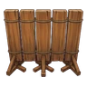

ฉากไม้
N ป้องกัน
กลายเป็นกำแพงที่ผ่านไม่ได้ กันการโจมตีระยะไกลด้วย ถูกตี 3 ครั้งก็พัง
ทั้งหนามทั้งปืนฉีดน้ำ ไม้แผ่นเดียวก็กันได้
ภาพรวม
| กาชา | กาชาธรรมดา (อัญมณี): ตั้งแต่ด่าน 5 (แบนเนอร์ 2, แบนเนอร์ 3, แบนเนอร์ 4, แบนเนอร์ 5, แบนเนอร์ 6, แบนเนอร์ 7, แบนเนอร์ 8, แบนเนอร์ 9, แบนเนอร์ 10, แบนเนอร์ 11, แบนเนอร์ 12) กาชาพรีเมียม: ตั้งแต่ด่าน 5 (แบนเนอร์ 1, แบนเนอร์ 2, แบนเนอร์ 3, แบนเนอร์ 4, แบนเนอร์ 5, แบนเนอร์ 6) |
|---|---|
| เงื่อนไขทำงาน | ทันทีที่วาง |
| ระยะ | 1 ช่อง |
| เป้าหมาย | |
| จำนวนครั้งที่ใช้ | 1 |
| ที่วาง | บนบก |
| ที่มา | หมู่บ้าน |
| เลเวลสูงสุด | 50 |
เอฟเฟกต์
- สิ่งกีดขวาง: HP 3
สิ่งที่เปลี่ยนเมื่อเลเวลอัป
| Lv | สิ่งที่เปลี่ยน |
|---|---|
| Lv10 |
|
| Lv30 |
|
| Lv50 | วิวัฒนาการ
|
| Lv60 |
|
| Lv90 |
|
ค่าแต่ละเลเวล
ค่าดาเมจเพิ่มตามเลเวล (และความหายาก) ตามสูตรการเติบโตของเกม ตารางแสดงค่าจริง
| Lv | เอฟเฟกต์ | ระยะ | จำนวนครั้งที่ใช้ |
|---|---|---|---|
| Lv1 |
| 1 ช่อง | 1 |
| Lv10 |
| 1 ช่อง | 1 |
| Lv30 |
| 1 ช่อง | 1 |
| Lv50 |
| 1 ช่อง | 1 |
การอัปเกรด
เลเวลมาจากกองเดียวกันของ EXP ที่ใช้ร่วมกันระหว่างกับดักและเกราะ: การขึ้นจากเลเวล L เป็น L+1 ใช้ 5 x L EXP EXP รวมตั้งแต่ Lv1:
| Lv | EXP รวม |
|---|---|
| Lv10 | 225 |
| Lv30 | 2175 |
| Lv50 | 6125 |